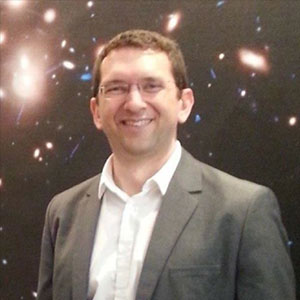
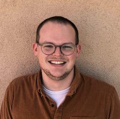
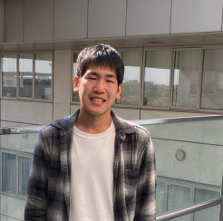
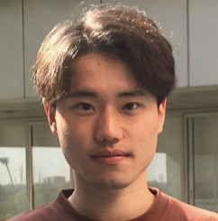
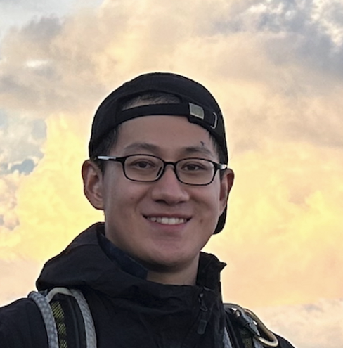
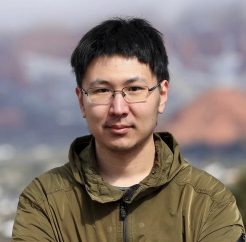
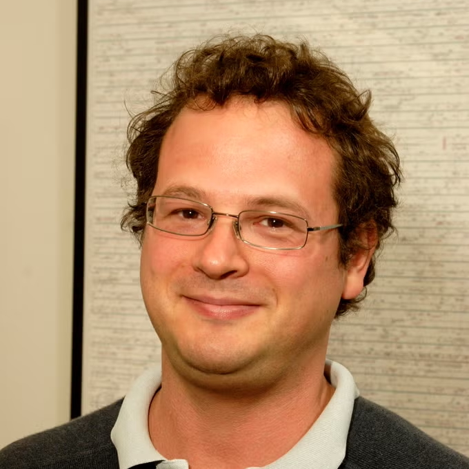
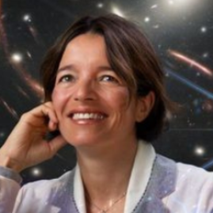

Meet the Team
VENUS is led by world-leading experts spanning gravitational lensing, high-redshift galaxies, stellar populations, black holes, and time-domain astrophysics. Key roles and contacts are listed below.
Principal Investigators


VENUS Key Architects & Builders





VENUS Advisory Committee
Casey Papovich
Texas A&M University

Pratika Dayal
Canadian Institute for Theoretical Astrophysics
Rachel Bezanson
University of Pittsburgh

Tommaso Treu
University of California, Los Angeles
John Chisholm
University of Texas, Austin

Maruša Bradač
University of Ljubljana
All Team Members
- Abdurro'uf Abdurro'uf (The Johns Hopkins University)
- Roberto G. Abraham (University of Toronto)
- Angela Adamo (Stockholm University)
- Hollis Akins (University of Texas at Austin)
- Ricardo Amorin (Universidad de La Serena)
- Pablo Arrabal Haro (NASA Goddard Space Flight Center)
- Yoshihisa Asada (University of Toronto)
- Hakim Atek (Institut d'Astrophysique de Paris)
- Micaela Bagley (NASA Goddard Space Flight Center)
- Rachana Bhatawdekar (European Space Astronomy Centre)
- Marusa Bradac (University of Ljubljana)
- Larry Bradley (Space Telescope Science Institute)
- Gabriel Brammer (University of Copenhagen)
- Volker Bromm (University of Texas at Austin)
- Caitlin M. Casey (University of Texas at Austin)
- John Chisholm (University of Texas at Austin)
- Dan Coe (Space Telescope Science Institute)
- Christopher Conselice (University of Manchester)
- Liang Dai (University of California - Berkeley)
- Pratika Dayal (Canadian Institute for Theoretical Astrophysics)
- Guillaume Desprez (Kapteyn Astronomical Institute)
- Miroslava Dessauges-Zavadsky (University of Geneva)
- Mark Dickinson (NOIRLab)
- Jose M. Diego (Instituto de Fisica de Cantabria)
- Eiichi Egami (University of Arizona)
- Daniel J. Eisenstein (Harvard University)
- Henry C. Ferguson (Space Telescope Science Institute)
- Steven L. Finkelstein (University of Texas at Austin)
- Seiji Fujimoto (University of Toronto)
- Lukas Jonathan Furtak (University of Texas at Austin)
- Timothy S. Hamilton (Shawnee State University)
- Yuichi Harikane (University of Tokyo)
- Takuya Hashimoto (University of Tsukuba)
- Nimish P. Hathi (Space Telescope Science Institute)
- Tiger Hsiao (Harvard University)
- Kohei Inayoshi (Peking University)
- Yolanda Jimenez-Teja (Instituto de Astrofisica de Andalucia)
- Shardha Jogee (University of Texas at Austin)
- Jeyhan Kartaltepe (Rochester Institute of Technology)
- Anton M. Koekemoer (Space Telescope Science Institute)
- Kotaro Kohno (University of Tokyo)
- Vasily Kokorev (University of Texas at Austin)
- Nimisha Kumari (Space Telescope Science Institute)
- Ivo Labbe (Swinburne University of Technology)
- Rebecca L. Larson (Space Telescope Science Institute)
- Ray A. Lucas (Space Telescope Science Institute)
- Georgios Magdis (Technical University of Denmark)
- Danilo Marchesini (Tufts University)
- Vladan Markov (University of Ljubljana)
- Nicholas Martis (University of Ljubljana)
- Jorryt Matthee (Institute of Science and Technology Austria)
- Ashish Kumar Meena (Ben Gurion University)
- Matteo Messa (INAF - Bologna)
- Lamiya Mowla (Wellesley College)
- Julian B. Munoz (University of Texas at Austin)
- Rohan Naidu (Massachusetts Institute of Technology)
- Kimihiko Nakajima (National Astronomical Observatory of Japan)
- Minami Nakane (University of Tokyo)
- Gael Noirot (Space Telescope Science Institute)
- Pascal Oesch (University of Geneva)
- Masamune Oguri (Chiba University)
- Yoshiaki Ono (University of Tokyo)
- Masami Ouchi (National Astronomical Observatory of Japan
- Richard Pan (Tufts University)
- Casey Papovich (Texas A & M University)
- Massimo Pascale (University of California - Berkeley)
- Justin Pierel (Space Telescope Science Institute)
- Marc Postman (Space Telescope Science Institute)
- Tom Resseguier (Space Telescope Science Institute)
- Armin Rest (Space Telescope Science Institute)
- Johan Pierre Richard (Centre de Recherche Astrophysique de Lyon)
- Massimo Ricotti (University of Maryland)
- Jane R. Rigby (NASA Goddard Space Flight Center)
- Marcin Sawicki (St. Mary's University)
- Raffaella Schneider (Universita di Roma La Sapienza)
- Kazuhiro Shimasaku (University of Tokyo)
- Louis-Gregory Strolger (Space Telescope Science Institute)
- Fengwu Sun (Harvard University)
- Sune Toft (University of Copenhagen, Niels Bohr Institute)
- Roberta Tripodi (University of Ljubljana)
- James Trussler (Harvard University)
- Akiyoshi Tsujita (University of Tokyo)
- Hiroya Umeda (University of Tokyo)
- Francesco Maria Valentino (European Southern Observatory)
- Eros Vanzella (INAF - Bologna)
- Alessandra Venditti (Universita di Roma La Sapienza)
- Darach Watson (University of Copenhagen)
- John R. Weaver (Massachusetts Institute of Technology)
- Brian Welch (University of Maryland)
- Chris J. Willott (NRC Herzberg Institute of Astrophysics)
- Rogier A. Windhorst (Arizona State University)
- Yi Xu (University of Copenhagen)
- Hiroto Yanagisawa (University of Tokyo)
- Erik Zackrisson (Uppsala Astronomical Observatory)
- Adi Zitrin (Ben Gurion University)
- Franz Erik Bauer (Pontificia Universidad Católica de Chile)
- Jacqueline Antwi-Danso (University of Toronto)
- Intae Jung (NASA Goddard Space Flight Center)
- Gourav Khullar (University of Washington)
- Christa DeCoursey (University of Arizona)
- Aadya Agrawal (University of Illinois Urbana-Champaign)
- Claudia Lagos (Universidad de Chile)
- Brenda Frye (University of Arizona)
- Gene Leung (Massachusetts Institute of Technology)
- Joseph Allingham (Ben Gurion University)
- Yoshinobu Fudamoto (Chiba University)
- Miriam Golubchik (Ben Gurion University)
- Qinyue Fei (University of Toronto)
- Rafael Ortiz (Arizona State University)
- Andreas Faisst (California Institute of Technology)
- Akiyoshi Tsujita (University of Tokyo)
- Bunyo Hatsukade (National Astronomical Observatory of Japan)
- Daniel Schaerer (University of Geneva)
- Suriya Kalirai (Institut d'Astrophysique de Paris)
- Conor Larison (Space Telescope Science Institute)
- Amanda Pagul (Space Telescope Science Institute)
- Gregor Rihtaršič (University of Ljubljana)
- Danielle Berg (University of Texas at Austin)
- Mateusz Bronikowski (University of Nova Gorica)
- Luke Robbins (University of Ljubljana)
- Sedona Price (University of Pittsburgh)
- Joshua Speagle (University of Toronto)
- Tiger Hsiao (University of Texas at Austin)
- Adélaïde Claeyssens (Stcokholm University)
- Mauro González-Otero (Instituto de Astrofísica de Canarias)
- Dave Coulter (Space Telescope Science Institute)
- Kate Whitaker (University of Massachusetts Amherst)
- Adam Muzzin (York University)
- Ana Acebron (Universidad de Cantabria)
- Daniel Fistos (Space Telescope Science Institute)
- Anthony Taylor (University Texas at Austin)
- Kana Takechi (University of Tokyo)
- Kirsten K. Knudsen (Charmerls University)
- Madi VanWyngarden (University of Arizona)
- Tomokazu Kiyota (University of Tokyo)
- James Trussler (Harvard University)
- Aviad Levis (University of Toronto)
- Peter Phan (University of Toronto)
- Gautham Narayan (University of Illinois Urbana-Champaign)
- Mabel Stephenson (University of Texas at Austin)
- Matt Siebert (Space Telescope Science Institute)
- Norman Grogin (Space Telescope Science Institute)
- Jorge González López (Pontifical Catholic University of Chile)
- Shun Nishida (Chiba University)
- Kartheik Iyer (University of Toronto — Dunlap Institute)
- William Sheu (University of California - Los Angeles)
- Tommaso Treu (University of California - Los Angeles)
- Marcie Mun (TBD)
- Gavin Farley (University of Toronto)
- Vesna Pirc Jevšenak (University of Ljubljana)
- Giordano Felicioni (University of Ljubljana)
- Jon Judež (University of Ljubljana)
- Paulo Afranio Augusto Lopes (Universidade do Vale do Paraíba)
- Duncan Austin (University of Manchester)
- Anita Zanella (INAF - Roma)
- Rosi Mérida (Saint Mary's University)
- Andrea Weibel (University of Geneva)
- Youwen Kong (University of Tokyo)
- Yuki Komatsu (University of Tokyo)